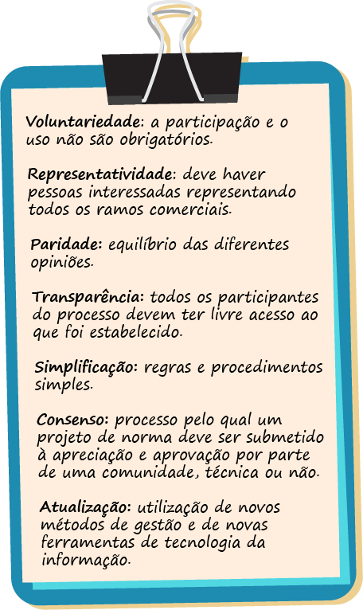

Óculos e lentes de contato podem apresentar irregularidades durante o processo de fabricação, as quais podem ser percebidas pelo usuário imediatamente na entrega de seus novos óculos ou suas novas lentes, assim como após alguns dias de uso.
Tais imperfeições podem ser toleradas ou, muitas vezes, quase imperceptíveis, mas representam grande preocupação para ópticos e fabricantes.
Além dos possíveis defeitos de fabricação, no aviamento de óculos, também podem ocorrer inconsistências, tais como a discordância de grau na prescrição do especialista ou nas medições aferidas na óptica – DPN (distância naso-pupilar), altura de centro óptico – ou mesmo a escolha de uma armação inadequada para o rosto e para a dioptria do usuário.
Nas lentes de contato, as medidas aferidas são tomadas pelo técnico em óptica contatólogo, que é especialista nas adaptações de lentes. Nesse caso, podem ocorrer equívocos na seleção de curvatura, diâmetro e materiais. Além disso, como no caso dos óculos, é possível se deparar com erros na prescrição do especialista e com problemas por maus cuidados do usuário, seja por falta de orientação, seja por displicência.
O laudo técnico deve ser meticuloso em sua análise e baseado na verdade.
Os profissionais que podem elaborar laudos técnicos são aqueles habilitados com formação no curso de técnico em óptica, por instituição e curso devidamente autorizados pelo MEC (Ministério da Educação) e com registro do referido diploma na Secretaria da Saúde do município onde atuará. Também é necessário respeitar a legislação vigente sobre a comercialização de produtos ópticos nas esferas Federal, Estadual e Municipal, bem como o Código de Defesa do Consumidor.
Informações obrigatórias que devem constar no laudo:
Veja as competências do profissional técnico responsável (perito):
A efetivação do laudo técnico está relacionada também à coleta de informação do usuário. São informações de fundamental importância para o entendimento dos problemas ocorridos para a sua não adaptação, tais como como medidas ópticas diferentes, curva base acentuada, desconforto no uso, entre outras.
Na análise do laudo referente a óculos receituários e/ou solares e lentes de contato, com ou sem ametropia, são considerados(as):
Para o desenvolvimento e a construção de um laudo técnico, os laboratórios têm um formulário de sua livre escolha. Não existe um modelo oficial, o importante é que o documento siga as normas já descritas.
Veja alguns modelos de confecção de laudos técnicos:
Modelo 1
Figura 1 – Modelo de laudo técnico
Fonte: Senac EAD
Laudo técnico constando cabeçalho com dados do laboratório. Abaixo, dados da óptica e, em sequência, dados da prescrição do cliente. Embaixo, consta a conferência do perito e seu parecer técnico reportando que houve divergência na medida técnica de DNP no olho direito e na altura do olho esquerdo, finalizando com o nome do profissional, com sua assinatura, local e data do laudo.
Modelo 2
Figura 2 – Modelo de laudo técnico
Fonte: Senac EAD
Laudo técnico constando parecer técnico com nome da técnica perita com sua assinatura. Em seguida, os dados da prescrição e da armação e, abaixo, os dados da perícia, sendo finalizado com local, data e rodapé com dados do laboratório.
Quando ocorrem queixas do usuário na adaptação das lentes de contato ou dos óculos adquiridos, uma avaliação do produto é necessária. Assim, encaminha-se o produto adquirido de volta ao laboratório onde foi confeccionado, para que o profissional técnico perito elabore um laudo técnico, dando um parecer no qual constem todas as características físicas das lentes de contato ou dos óculos analisados.
Tratando-se de medidas técnicas, o Conselho Brasileiro de Óptica e Optometria (CBOO), de Brasília, e a Associação Brasileira de Óptica (ABCI), de São Paulo, referem as tolerâncias ópticas para óculos e lentes de contato graduados:
Figura 3 – Tolerâncias ópticas para óculos dioptricamente graduados
Fonte: Dias (2015)
Tabela mostrando as tolerâncias ópticas permitidas em graus e medidas técnicas para óculos.
O cliente solicita um par de óculos graduado e, ao retirar seus óculos prontos, percebe que não consegue enxergar como deveria, ou sente algum tipo de desconforto. Assim, ele reporta sua queixa à óptica e o estabelecimento, por sua vez, tenta resolver a situação.
Nesse caso, a óptica encaminhará a solicitação do laudo técnico para o laboratório, informando ao cliente o tempo de espera estipulado no prazo. Sendo identificado o problema e atestado um erro de fabricação, será refeito o serviço de acordo com o que foi solicitado.
A sigla ABNT significa Associação Brasileira de Normas Técnicas. É um órgão privado e sem fins lucrativos fundado em 1940 que se destina a elaborar normas brasileiras para o desenvolvimento, a fabricação e o fornecimento de produtos e serviços.
A elaboração de normas técnicas obedece aos seguintes princípios:
Assim, as normas da ABNT definem regras que os fabricantes e fornecedores de serviços engajados nela devem seguir. Elas são elaboradas com a participação de Comitês Técnicos, que são órgãos de coordenação, planejamento e execução das atividades de normalização técnica relacionadas com o seu âmbito de atuação.
Atualmente, existem mais de 50 Comitês Técnicos dedicados a diferentes setores de atuação. No campo da óptica e dos instrumentos ópticos, o órgão responsável é o Comitê Brasileiro de Óptica e Instrumentos Ópticos (ABNT/CB 49). O CB 49 atua na normalização desse campo, compreendendo sistemas completos, dispositivos, instrumentos, componentes ópticos, dispositivos auxiliares e acessórios e também terminologia, requisitos, métodos de ensaio e generalidades de materiais do segmento.
Os comitês se reúnem periodicamente para analisar se as normas já instituídas estão de acordo com o avanço das tecnologias. Caso se observe que algum aspecto da norma está defasado, uma nova norma substitui a desatualizada.
A seguir, veja as principais normas técnicas do segmento óptico.
ABNT NBR ISO 12312-1:2015
Proteção dos olhos e do rosto – Óculos para proteção solar e óculos relacionados. Parte 1: Óculos para Proteção solar e uso geral.
A norma estabelece limite de intensidade de cores nas lentes para proteção solar.
ABNT NBR 16347:2015
Óptica oftálmica – Óculos, armações e lentes – Identificação das informações aplicáveis na apresentação e oferta de produtos ópticos ao consumidor.
Devem aparecer nas lentes e armações informações de fácil acesso ao cliente.
ABNT NBR ISO 10322-1:2014
Óptica oftálmica – Bloco semiacabado para lentes de óculos. Parte 1: Especificações de bloco semiacabado para lentes de visão monofocal e multifocal.
Nas especificações dos blocos semiacabados devem aparecer informação sobre índice de refração. Diâmetro e espessura do bloco conforme determinam as normas da ABNT.
No caso de a confecção de um laudo técnico medir espessura, diâmetro e curva base (CB) do bloco semiacabado.
ABNT NBR ISO 8980-4:2012
Óptica oftálmica – Lentes para óculos acabadas e não cortadas. Parte 4: Especificações de transmitância e métodos de ensaio para revestimentos antirrefletivos.
ABNT NBR ISO 24348:2013
Óptica oftálmica – Armações de óculos – Método para simulação de desgaste e detecção de liberação de níquel em armações de óculos em metais e combinadas.
ABNT NBR ISO 16180:2013
Óptica oftálmica – Armações e óculos solares – Fluxograma do processo produtivo básico.
ABNT NBR ISO 14889:2012
Óptica oftálmica – Lentes para óculos – Requisitos fundamentais para lentes acabadas não cortadas.
ABNT NBR ISO 9342-1:2012
Óptica e instrumentos ópticos – Lentes-padrão para calibração de lensômetros. Parte 1: Lentes padrão para calibração de lensômetros usados na medição de lentes para óculos.
ABNT NBR 15091:2012
Óptica e instrumentos ópticos – Óptica oftálmica – Marcação de armações para óculos.
ABNT NBR ISO 7998:2012
Óptica oftálmica – Armações de óculos – Listas de termos equivalentes e vocabulário.
ABNT NBR 15092:2004
Óptica oftálmica – Armações de óculos –Requisitos gerais e métodos de ensaio.
ABNT NBR 14993:2003
Óptica e instrumentos ópticos – Óptica oftálmica – Sistemas de medição para armações para óculos.
O técnico perito precisa estar informado da atualização das normas para segui-las e considerá-las na construção do laudo técnico, pois esse documento precisa estar de acordo com as normas da ABNT.
Veja, a seguir, alguns exemplos de normas da ABNT aplicáveis ao laudo técnico.
Especificações para lentes de visão monofocal e multifocal. Prevista para cancelar e substituir a ABNT NBR 15090-1:2004; que se referia a lentes acabadas e cortadas, pois, com a evolução tecnológica, é possível adquirir lentes semiacabadas (com uma das curvaturas acabada), o que se chama de CB (curva base).
Especificação para lentes de potência progressiva. Prevista para cancelar e substituir a ABNT NBR 15090-2:2004, que se refere à potência (poder dióptrico) das lentes progressivas, determina e limita a escala de progressão que deve estar presente no corredor da lente.
Especificações de transmitância e métodos de ensaio. Prevista para cancelar e substituir a ABNT NBR 15090-3:2003.
Transmitância: é a fração de luz incidente com um comprimento de onda específico, que atravessa uma amostra de matéria que, nesse caso, é uma lente.
Especificação de transmitância: especifica qual é o comprimento de onda da luz quando atravessa uma lente e qual é o método utilizado para essa medição.
A Comissão de Estudo de Lentes Oftálmicas (CE 49:000.01) do Comitê Brasileiro de Óptica e Instrumentos Ópticos (ABNT/CB 49) elaborou o projeto de revisão da norma ABNT NBR ISO 8429 – Óptica e instrumentos ópticos – Oftalmologia – Escala com indicação graduada, prevista para cancelar e substituir a edição anterior do ano de 2003. A norma descreve especificações de um sistema de coordenadas angulares (eixo) para construção de escalas, retículas ou outros dispositivos de posicionamento para os instrumentos ópticos e as lentes oftálmicas. Existem normas para a construção de escalas para a óptica oftálmica, por exemplo, para a confecção de optotipos.
Esta especificação técnica define métodos para o desgaste acelerado e a corrosão a serem usados antes da detecção da liberação de níquel de armações oftálmicas de metal revestido e combinadas, e para detectar a liberação de níquel dos componentes das armações de óculos de metal e combinadas, revestidas ou não, destinadas a entrar em contato direto e prolongado com a pele, a fim de determinar se a liberação de níquel em tais componentes é maior do que uma taxa de 0,5 μg/cm2/semana. Pela ABNT, a taxa de liberação de níquel não pode ser superior a 0,5 µg/cm2/semana.
Na elaboração de um laudo técnico, as normas deverão ser consultadas pelo perito, para que se tenha certeza de que estará sendo seguido corretamente.
Cabe ressaltar que, de uma forma geral, normas técnicas não têm força de lei e que seu uso é desejável, mas não obrigatório
As normas técnicas aqui apresentadas devem ser observadas para a elaboração de um laudo técnico, mas, no que diz respeito à fabricação, é possível que um produto não siga a norma aplicável no mercado determinado.